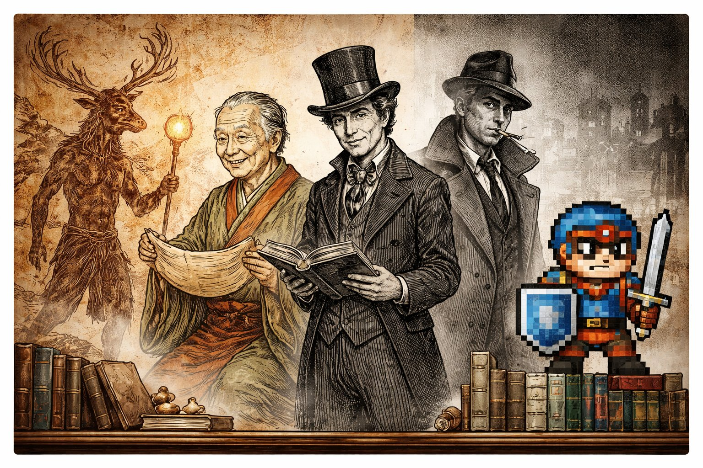
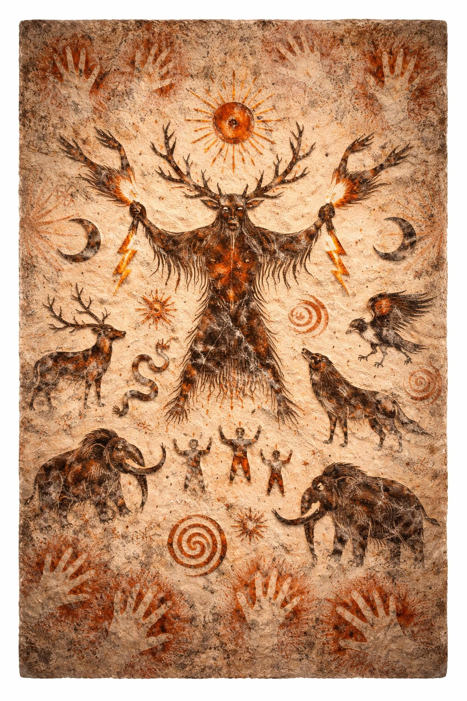
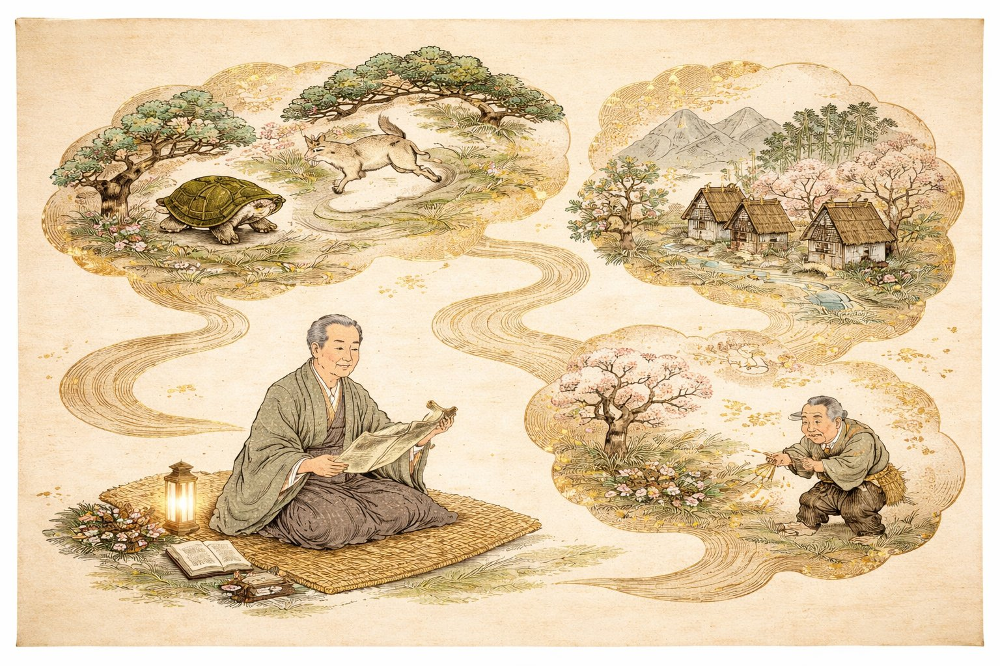
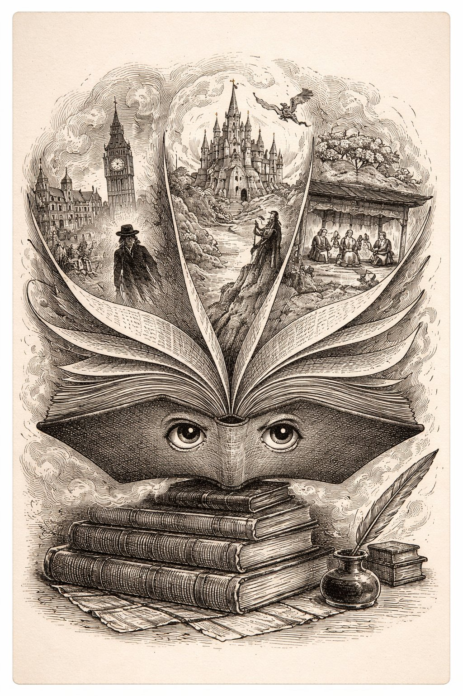
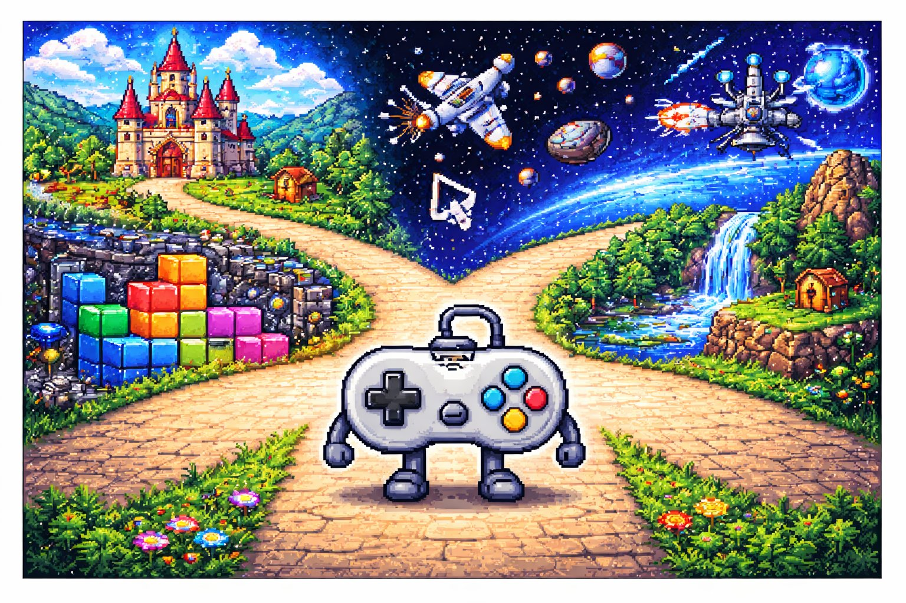

にんげんは ものがたりを つくる いきもの だ。
ほかの どうぶつは、いまを いきる。でも にんげんだけが「むかし むかし」と「もし こうだったら」を かんがえる。
存在しない 世界を あたまのなかに つくって、だれかに つたえる。
これが できるのは、にんげん だけ。

シンワちゃんは 神話。世界の あらゆる文化に ある、いちばん ふるい ものがたり。
ギリシャ神話、日本神話、北欧神話、インド神話…
どの文化にも「世界は どうやって はじまったか」の 物語がある。
科学が こたえる まえ、神話が こたえていた。

ムカシさんは 昔話・民話。文字が ない時代から 口伝えで つたわった。
世界じゅうの 昔話には 共通パターン がある。「3つの試練」「末っ子が勝つ」「変身」——
文化が ちがっても、にんげんが 語りたい ことは おなじ。

ショウセツは 小説。「他人の 頭の中に 入る」という とんでもない 発明。
共感力を きたえ、知らない 世界を 体験させ、ときに 人生を かえる。
『源氏物語』は 世界初の 長編小説とも いわれる。
モジさん（文字）の 最も 美しい つかいかた。
エイガは 映画。1895年、リュミエール兄弟の「工場の出口」が はじまり。
130年で 世界最大の ものがたり産業に。
映画の ちからは「言語を 超える」こと。表情と 音楽と 映像で つたわる。

ゲーム先輩は ゲーム。いちばん あたらしく、いちばん インタラクティブ。
ゲームは プレイヤーが えらぶ。分岐し、失敗し、やりなおす。
これは「人生の シミュレーション」。
そして この「じこしょうかいシリーズ」も、やがて ゲームに なる。
🌍に おそわったこと — 「こたえが ないとき、ものがたりが こたえになった」。
📖に おそわったこと — 「にんげんが つたえたいことは、せかいじゅう おなじ」。
📚に おそわったこと — 「べつの じんせいを いきられる」。
🎬に おそわったこと — 「ことばが なくても、つたわる」。
🎮に おそわったこと — 「えらべる ものがたりが、いちばん つよい」。
① 普遍 — 文化がちがっても、語りたいことは同じ。人間はどこでも物語を求める。
② 共感 — 物語は「他人になる」訓練。共感力は物語から生まれる。
③ 参加 — 読むから見るから遊ぶへ。物語はインタラクティブになっている。